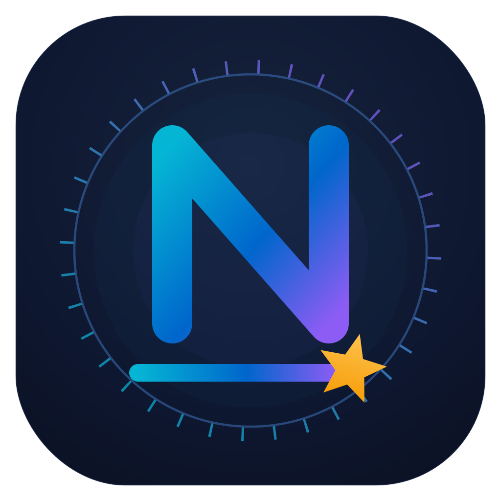
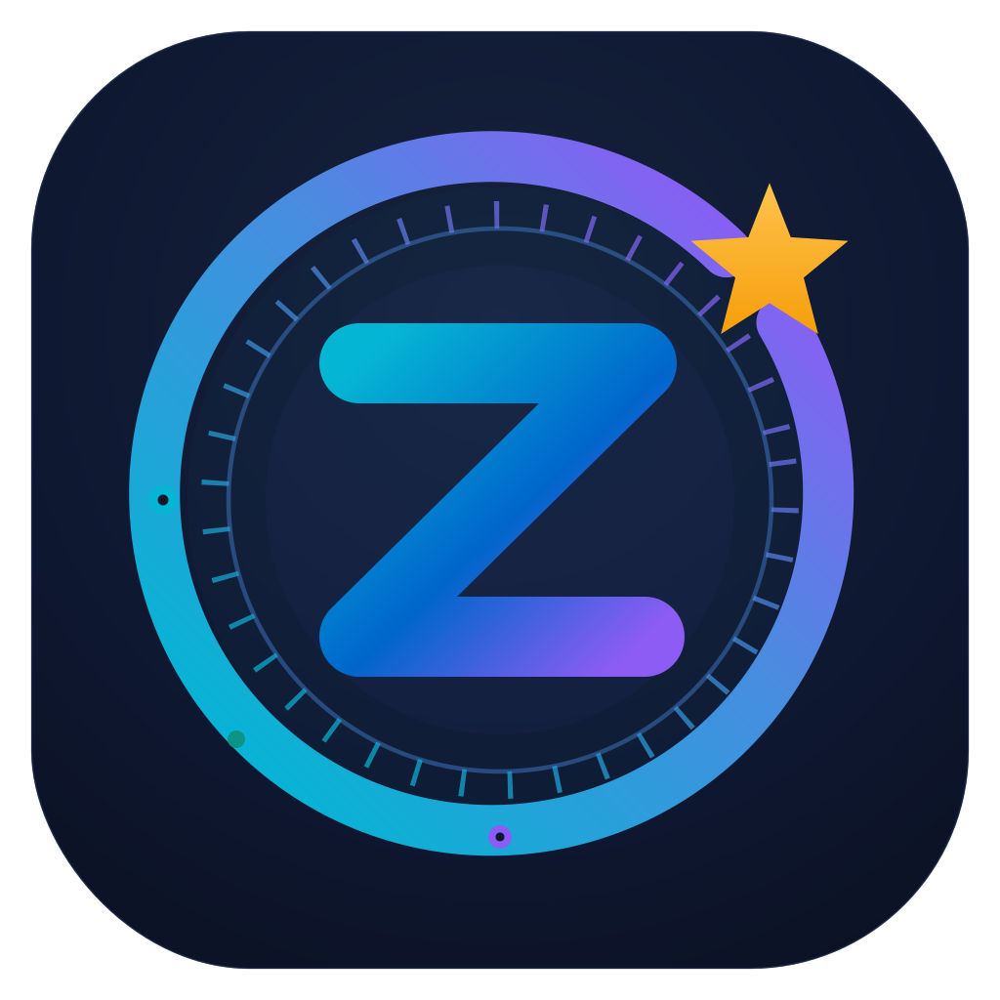

Syxx — All Views & Style Guide
Every pane of the Syxx GUI laid out side by side — the ten macOS views first, then the ten Windows views. Below the reference panels, each screen is captioned with what it does and how a user proceeds through it. All screens are live: click the sidebar items and buttons in any panel.
Color Swatch Chart · Dark Theme
Background
#130d26
Surface
#1d1640
Surface Elevated
#2a2154
Border
#382c66
Blue (accent)
#8b5cf6
Electric
#b98cff
Accent Start (warm)
#f0ac38
Label / Divider
#f2ba4a
Accent End
#7c3aed
Critical
#f5405e
High
#fa7317
Success (teal)
#0d9487
Gradient Reference
Wordmark text
linear-gradient(100deg, #f0ac38, #e6c6dd 52%, #a96ad6)
Accent tile / Pro badge
linear-gradient(135deg, #f0ac38, #7c3aed)
App / page background
radial-gradient(120% 90% at 50% 0%, #241a48, #0c0820 72%)
Icon & Image Locations
Raster assets live in the project's assets/ folder. Inline UI glyphs are hand-drawn SVG (Lucide-style, 2px stroke) inside each pane.

assets/nnyx-logo.png
assets/zzyn-logo.pngassets/nnyx-1.png · nnyx-2.png (Nnyx screenshots)
assets/zzyn-1.png · zzyn-2.png (Zzyn screenshots)
Source components: SyxxApp.dc.html (app), Syxx Web.dc.html (site), Syxx GUI.dc.html (mac/win frames).
How the app works
Syxx is navigated entirely from the left sidebar. The top item is the entry point (What's New on macOS, Welcome on Windows), followed by the six Diagnostics — Prophets, Mirrors, Portals, Gluttons, Cages, Witnesses — a Dimensions link to syxx.app framed by two orange dividers, and the Account · License pane. Each diagnostic takes a domain (default github.com), runs on a button click, and returns labelled output cards. Severity is color-coded: teal = safe, orange = warning/high, red = critical.
Dimensions & Type Scale
Spacing & Layout
Sidebar width258px
Pane inset32px
Section gap24px
Card padding16–18px
Grid gap16px
App pane1180×800
Corner Radii
Badge4px
Chip6px
Button / input8px
Card / stat12px
Panel / frame14–16px
Pill999px
Type Scale
View title28 / 600
Card title20 / 700
Body14
Caption13.5
Meta / small12
Eyebrow10 · .06em
macOS 26 · Liquid Glass
Nine views, left to right in sidebar order
{{ v.n }}{{ v.title }}{{ v.tag }}
{{ v.what }}
Proceed: {{ v.how }}
Windows 11 · Fluent
Same ten views; entry point is Welcome instead of What's New
{{ v.n }}{{ v.title }}{{ v.tag }}
{{ v.what }}
Proceed: {{ v.how }}
Full layout · unclipped
Panels that scroll inside the 800px window, shown here at full height so the whole layout reads in one continuous piece.
Conclusion — in the app (800px window; scrolls internally, so the lower sections are hidden)
Same panel, full height — every section visible, nothing behind a scrollbar